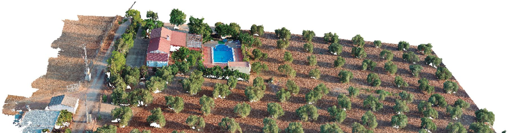

AeroLab captura cada finca desde el aire
Nuestro laboratorio de teledetección vuela con cámaras RGB, multiespectrales, térmicas, hiperespectrales y LiDAR, y convierte cada vuelo en ortomosaicos, modelos 3D y nubes de puntos.
Visitar AeroLabCargando nube de puntos real
Unidad de Transformación Digital e Inteligencia Artificial del INUO
Liderada por Juan Manuel Jurado. Dibujamos el futuro del olivar con los datos que medimos hoy en campo.
Datos reales de vuelo con dron. Arrastra para girar y toca un olivo.
Desarrollamos soluciones tecnológicas para monitorizar agroecosistemas, procesar datos geoespaciales y simular su evolución.
La unidad se creó en marzo de 2025 dentro del Instituto Universitario de Investigación en Olivar y Aceites de Oliva. Trabajamos para demostrar qué prácticas agrícolas innovadoras son viables y cómo ayudan a las explotaciones a resistir fenómenos agroclimáticos adversos.

La agricultura inteligente es clave para un modelo más sostenible, eficiente y resiliente.
Nuestro laboratorio de teledetección vuela con cámaras RGB, multiespectrales, térmicas, hiperespectrales y LiDAR, y convierte cada vuelo en ortomosaicos, modelos 3D y nubes de puntos.
Visitar AeroLabEn el navegador, la inteligencia artificial delimita cada copa y la proyecta sobre la nube 3D. De ahí salen el inventario por individuo, el vigor, la erosión y el balance de carbono.
Entrar en SAVIAFusionamos las capas de cada vuelo sobre la misma geometría 3D para analizar a la vez forma, vigor y temperatura. GEU, nuestra aplicación de escritorio, abrió este camino.